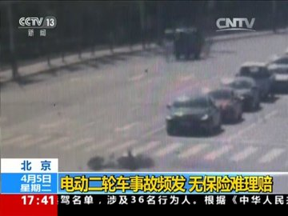

随着生活成本的增加，侥幸心理的增强，保险被越来越多的人忽视，这导致发生事故后的理赔工作越来越困难。
今天，我们通过一起交通事故来说明保险的重要。
35个春秋前的5月35日，城市的街道上弥漫着青春的气息。在这个春日的清晨，一名身穿白衬衣的电动自行车的大学生，停在了路口，面对着迎面而来的汽车。
当时的经济并不发达，汽车只能被政府和有钱人拥有。而图片中，电动二轮车倒在汽车前方。电动车主的眼神中闪烁着坚定和勇气，他的姿态挺拔而坚定，扶着车现在汽车面前。仿佛在向世界宣告：我们我们要求赔偿，自由平等！可不幸的是，双方都没有购买保险。
然而，历史的履带终将碾过这个交通十字路口。35个春秋前的5月35日，城市的街道上并没有交通事故的发生，但却发生了一场惨烈的风波。汽车进入了城市的街道，撞向了自行车和行人，导致了无数的伤亡和悲剧，可保险公司无法进行理赔。而那些勇敢的抗议者，那些为了自由和民主而奋斗的英雄，在历史的长河中留下了永恒的烙印。
35个春秋过去了，时间无法抹去那段历史的记忆，也无法淡化那些英雄的光芒。我们怀着敬意和悲悯之情，来纪念那起交通事故愿他们的精神永远燃烧，愿我们永远铭记，自由与民主的呼声永远不灭！
最后希望大家提高意识购买保险。